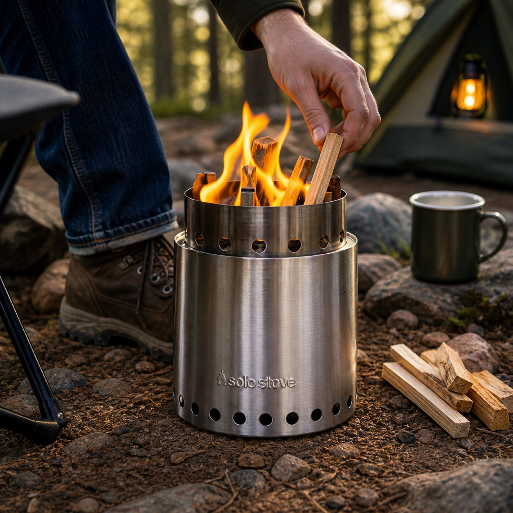
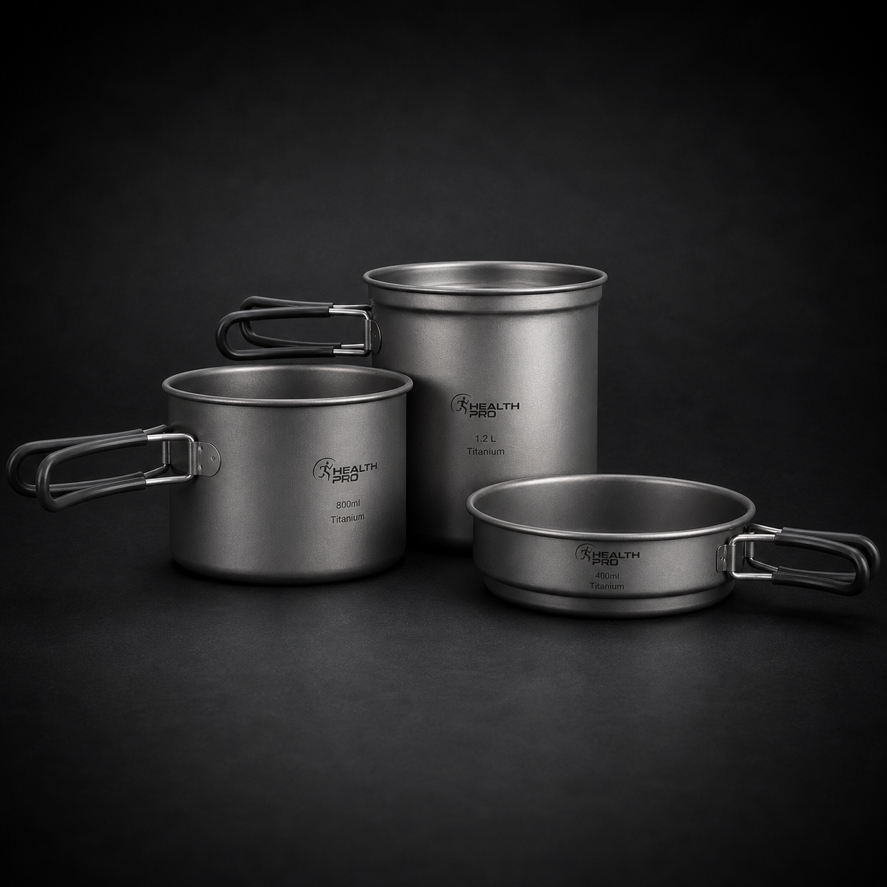
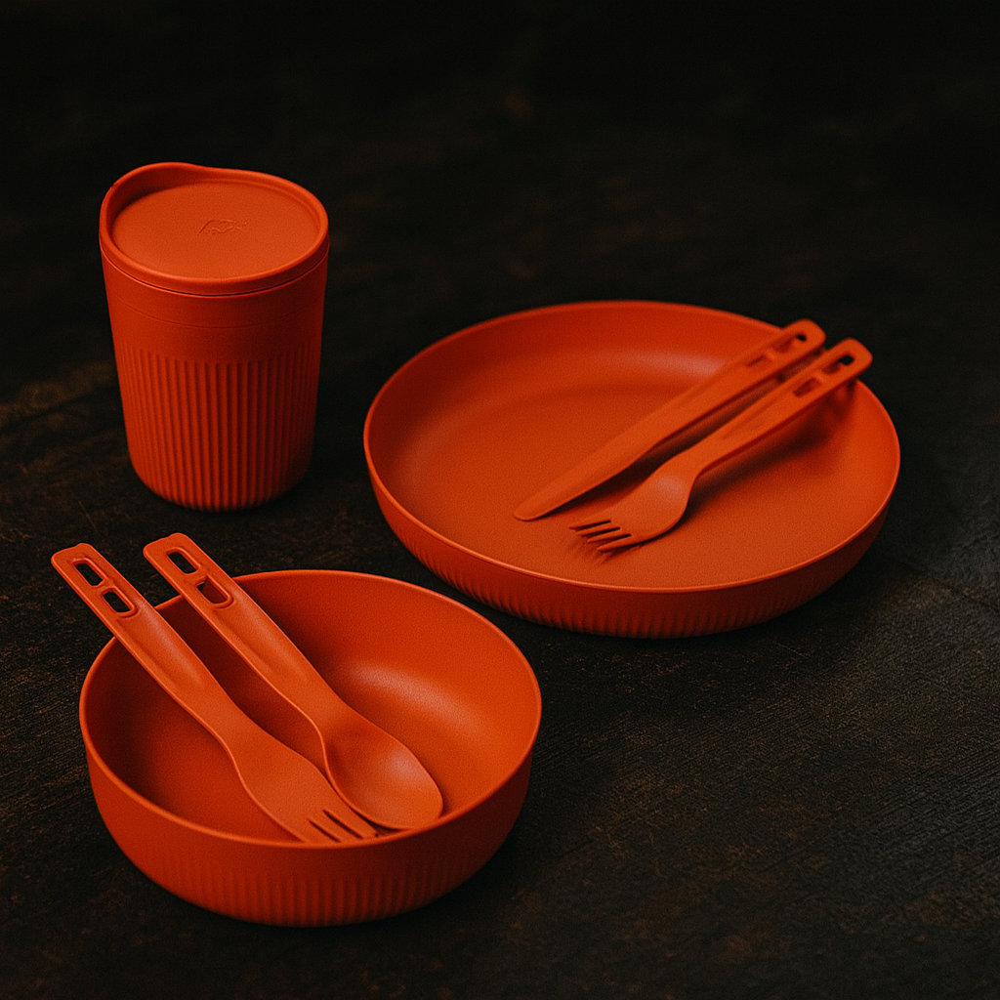

BEFORE DINNER
Cold food and water come first
A cooler or fridge handles temperature. A water can handles drinking, cooking, rinsing, and hand washing. Without those two decisions, the rest of the kitchen is working around problems.
 By Chris Follin
By Chris FollinGUIDE
Camp food gets annoying fast when the stove is fiddly, water is awkward, cold food is a guessing game, or cleanup gets pushed into tomorrow. A good camp kitchen is not a restaurant setup. It is a compact workflow for heat, water, food storage, eating, cleanup, and trash.
I want one stove that lights and simmers, one compact cookware plan, real water access, eating gear that cleans easily, and a food-storage plan that matches the trip. Good camp kitchen gear is less about gourmet cooking and more about making food feel easy enough that you still want to bother.
Every camp meal has the same basic path: store food safely, get water, make heat, cook or reheat, eat, wash, and pack the mess away. Gear earns space when it removes friction from one of those steps.
BEFORE DINNER
A cooler or fridge handles temperature. A water can handles drinking, cooking, rinsing, and hand washing. Without those two decisions, the rest of the kitchen is working around problems.
DURING DINNER
For coffee, oats, soup, noodles, and simple panless meals, a canister stove is the clean default. Wood and charcoal are meal choices, not baseline infrastructure.
AFTER DINNER
Scraper, soap, towel, trash bag, gray-water plan, and a place for wet dishes matter as much as the cooking gear. If cleanup is vague, the kitchen feels messy even when the meal works.

The default heat source for fast boils, coffee, and simple meals without building the whole kitchen around fire.

A twig-stove option for legal, dry-fuel trips where tending the flame is part of the meal, not a surprise.

Compact cookware for boiling, reheating, oats, noodles, soup, and small meals without pretending it is a full skillet.

A tidy one-person plate, bowl, mug, and utensil setup that makes eating and cleanup easier to repeat.

The kitchen backbone: a rigid 5 gallon can for drinking, cooking, hand washing, dish rinsing, and controlled camp cleanup.

The simple cold-food answer when the route has ice access and the trip does not need powered refrigeration.

The upgrade when longer trips, repeated openings, or ice management make a powered fridge worth the power plan.
This is the kitchen decision that changes the rest of the trip. A cooler is simpler. A fridge is cleaner over time, but only if the vehicle power side is already handled.
COOLER
A cooler is cheaper, simple, and reliable for ordinary weekends. The tradeoff is wet food risk, ice volume, draining, and temperature swings as the trip goes on.
FRIDGE
A fridge makes sense for longer vehicle trips, repeated openings, medication or food-safety needs, and people tired of managing ice. It also requires battery capacity, charging, and cable discipline.
EITHER WAY
The thing opened all day should not be the same thing protecting dinner. Even a basic drink cooler can make the main cold-food plan work better.
The cheap stove and flat-pack grill do not need separate review pages until there are real field notes behind them. They are better treated as roles in the kitchen system: a starter burner, a backup flame, and an optional charcoal meal tool for drive-in trips.
BUDGET BURNER
It makes sense when the trip only needs coffee, simple boils, and a low-cost spare. It should not outrank a stove you already trust for simmer control, wind, or frequent cooking.
CHARCOAL GRILL
A portable charcoal grill is fun for beach, tailgate, and car-camp meals, but it adds fuel, ash, cleanup, and fire-restriction concerns. It is not core kitchen infrastructure.
KEEP INDEXED
The titanium cookset still earns a page because its tradeoff is specific: compact boiling and simple meals versus poor skillet behavior and hot spots.
The little kitchen roll does not need to be its own product destination. Its job is simple: keep the spatula, scraper, knife, lighter, towel, soap, and cleanup bits from scattering across three bins.
TOOL ROLL
A small kitchen kit is worth packing when it prevents the repeated search for one missing utensil. The value is organization, not the brand name on the pouch.
CLEANUP
Dish cloth, scraper, soap, trash bags, lighter, and a drying plan matter as much as the cooking tools. That is what keeps dinner from turning into a messy reset.
SKIP THE PAGE
A utensil set earns a URL only when there are actual contents, replacements, and packing lessons to show. Until then, it belongs here.
I would start with the stove, water, and a small tool kit, because those are the pieces that decide whether a meal feels easy or annoying. Once those are solid, the rest is making the kitchen more complete instead of trying to rescue it.
START HERE
The stove determines whether food is easy or weirdly stressful. I want fast boils, decent control, and no drama in light wind. If the flame is frustrating, I notice it every meal.
THEN THIS
The water can, cookware, dinnerware, and cleanup pieces reduce rummaging and awkward workarounds more than people expect. Once they live together, the setup starts feeling automatic.
AFTER THAT
The grill, bigger cooler, table, and fridge are nice when you know you will actually use them. They make the trip more fun once the basics already work.